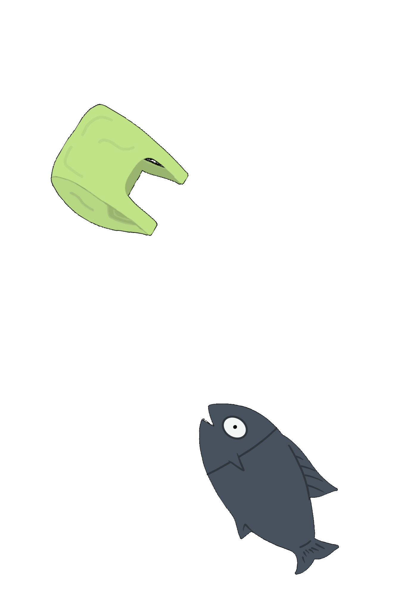
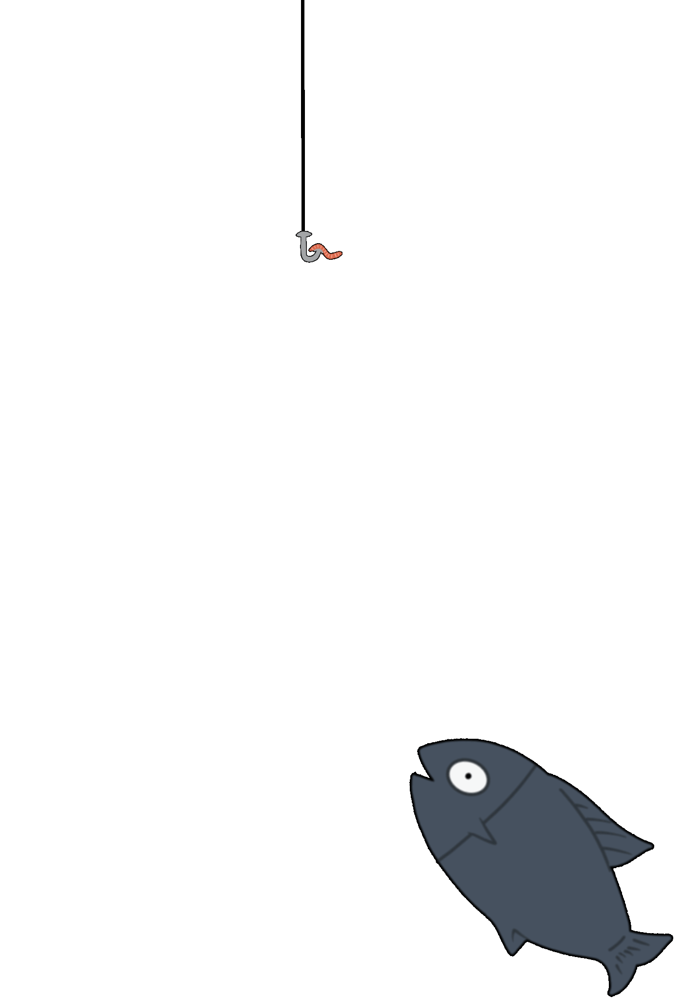
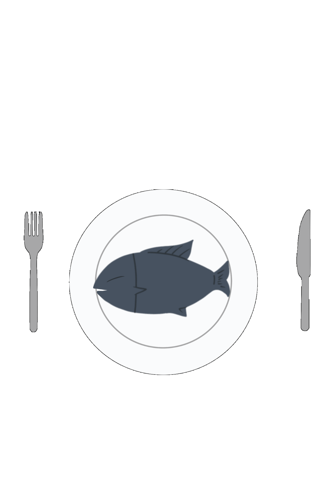

Os investigadores estão cada vez mais preocupados com a presença de microplásticos no oceano, uma vez que estes são consumidos pelos animais de forma acidental ou mesmo intencional.
A primeira observação científica de animais a ingerir plásticos surgiu depois de uma equipa ter analisado o estômago de uma ave marinha em 1969. Três anos depois, os cientistas mostraram que os peixes da costa do sul da Nova Inglaterra estavam a consumir minúsculas partículas de plástico.
Agora, uma nova pesquisa indica que os peixes estão a aumentar cada vez mais o consumo de plástico, com o número de espécies marinhas “contaminadas” a quadruplicar.
A captura através da pesca foi de 90,9 milhões de toneladas, uma pequena descida em relação aos dois anos anteriores. A pesca em oceanos e mares foi de 79,3 milhões de toneladas e em rios e lagos 11,6 milhões, um aumento de 2% em relação ao ano anterior. Apenas 16 países, a maioria na Ásia, foram responsáveis por quase 80% de toda esta produção.
FAO pretende discutir formas de tornar os recursos pesqueiros mais sustentáveis.
Continua a aumentar a pesca em níveis não sustentáveis. , by ONU/Martine Perret
A percentagem de reservas de peixe em níveis sustentáveis continua em queda. Em 1974, era 90%, e, em 2015, caiu para 66,9%.
Por outro lado, o peixe capturado em níveis não sustentáveis aumentou, de 10% em 1974 para 33,1% em 2015, com os maiores aumentos no final da década de 1970 e anos 80.